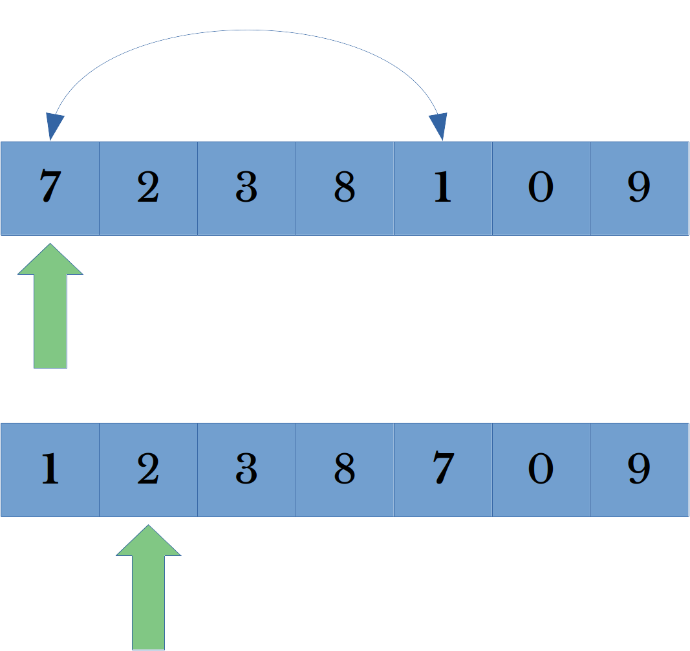
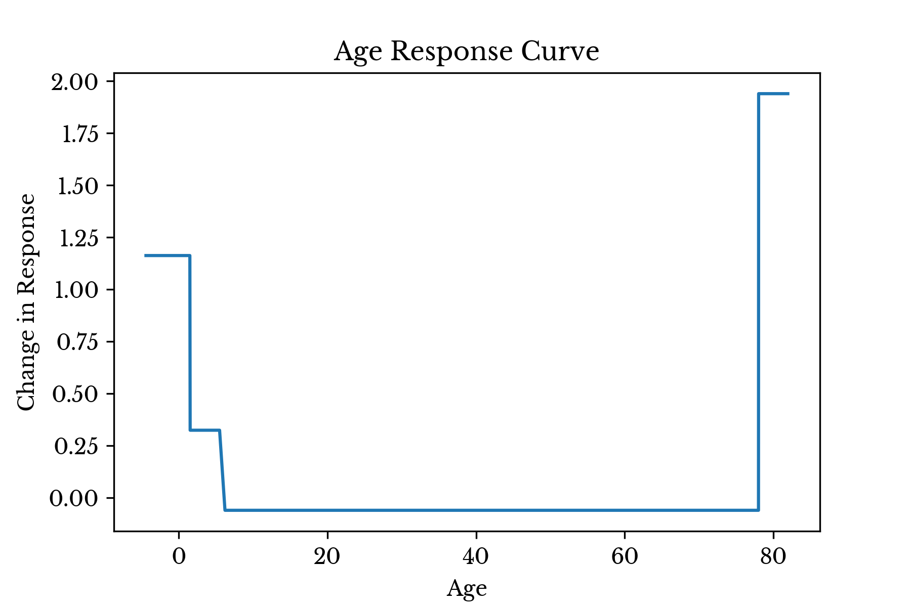
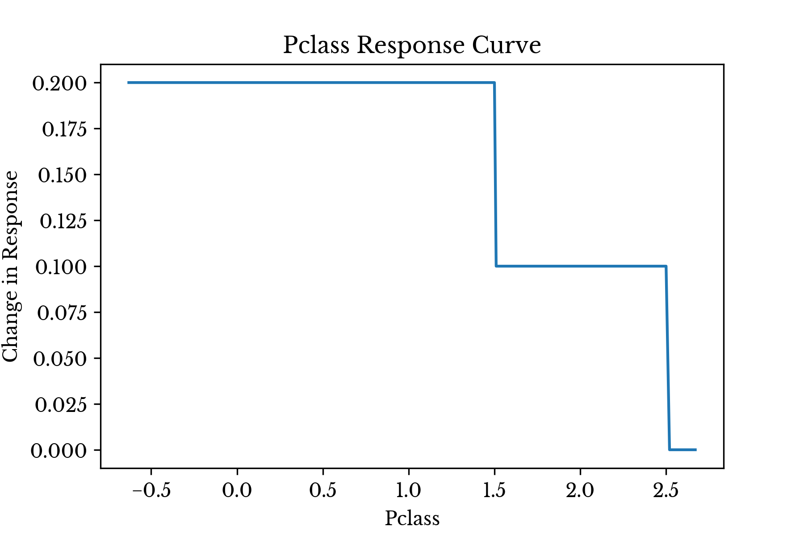
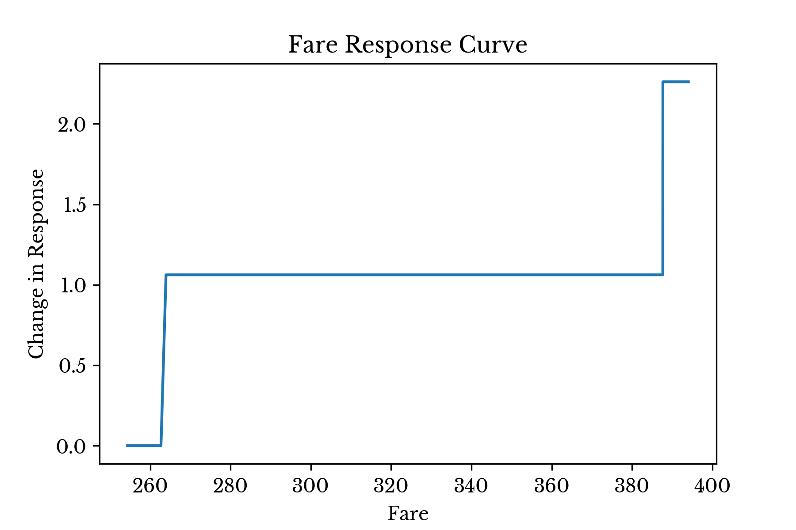
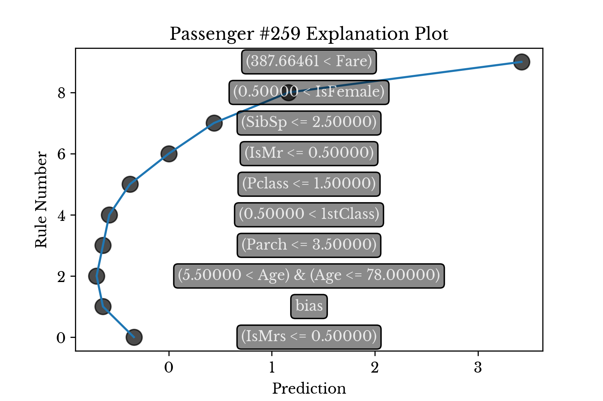
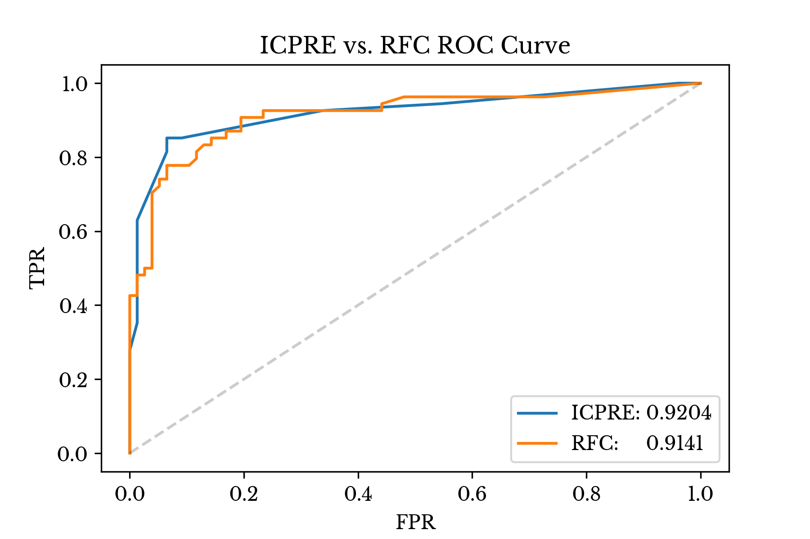
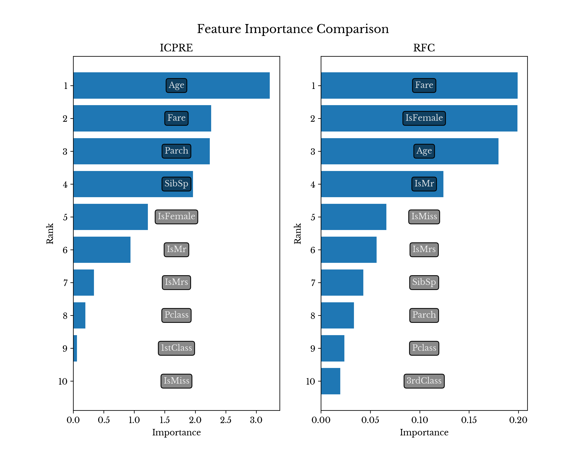

ICP In Practice
Sat, 29 May 2021
Computer Science, Data Science, Data Visualization, Machine Learning, Python, Statistics
This post explores the iterative constrained pathways rule ensemble (ICPRE) method introduced in an earlier post using the Titanic dataset popularized by Kaggle [1]. The purpose of the text is to introduce the features and explore the behavior of the library.
Some of the code snippets in this post are shortened for brevity sake. To obtain the full source and data, please see the
ICPExamples GitHub page [2].
Setup
The ICPRE class is available in the
ICPOptimize package that is hosted on
PyPi [3]. To get started, the library can be installed using
pip.
pip install ICPOptimize
The ICP package has several sub-modules, but the two primary ones are
Models and
Solver. At present,
Models implements the ICPRE algorithm and internally calls the ICPSolve function inside the Solver module.
To get started, the ICPRE class can be imported using the following command.
from ICP.Models import ICPRuleEnsemble
Next,
pandas can be used to load the data about the passengers on the Titanic and do some basic feature extraction.
import pandas as pd
DF = pd.read_csv('TitanicFull.csv')
DF['IsFemale'] = DF.Sex == 'female'
…
DF['2ndClass'] = DF.Pclass == 2
DF['3rdClass'] = DF.Pclass == 3
Next, the various parameters of the method are explained and their impact on the resulting model are explored.
ICPRE Parameters
Default parameters are specified for the model that attempt to be fairly general purpose. Further, the code documents the meaning of each of the input parameters. However, there are a number these that are worthy of further mention.
Learning Rate
The
lr parameter describes a type of learning rate that can dramatically change the resulting model. Specifically, it controls the maximum distance the algorithm can move at each iteration. Large values allow for greater loss reduction at each step, but can cause the algorithm to stall earlier. Smaller values allow the algorithm to run for more iterations, usually resulting in more accurate final models. In general, larger values produce models with fewer non-zero coefficients and smaller values produce models with more non-zero coefficients. However, this effect is dependent on other parameters including the swapping distances discussed later. For small values of
lr, ensure that the
maxIter and
tol parameters allow for sufficient iterations to complete before optimization terminates.
Tree Model Settings
The
tm and
tmPar settings allow for control over the tree method used to extract rules and the parameters that are provided to the given method. The default is to use the
GradientBoostingClassifier class from
scikit-learn with a maximum depth of 1. However, other settings and full customization is available.
The only purpose of the tree model is to identify good splitting values to use as rules. In fact, the fitted tree model is discarded after the
fit function returns. The
ESFx parameter is a function that takes as input the fitted tree model and produces a list of (index, value) pairs describing these rules. Each rule is of the form
A[:, index] <= value.
Swap Distance
The parameters
nsd and
xsd describe the minimum and maximum distance to move columns that reduce error ahead in the traversal plan. A random value between
nsd and
xsd is chosen and the current column is swapped with the column at that index. Then the traversal index is advanced by one, passing over the swapped column.

Figure 1: Column Traversal Order Update
Figure 1 illustrates a column traversal order update. In this case, the successful column (7) is set to be encountered again in four iterations. In general, shorter maximum swap distances allow the algorithm to re-encounter columns that reduce error sooner. Setting both the minimum and maximum distance to one has a similar effect to using a large learning rate.
Column Order
The
cOrd allows for relative or absolute ordering in the coefficients of the rule according to their individual performance against the target labels. This constrains the algorithm to prevent weaker rules from achieving larger magnitude coefficients than stronger rules. Relative ordering only constrains the algorithm in this way within rules using the same feature. Absolute ordering constrains the algorithm across all rules, regardless of the feature they use.
To motivate such constraints, consider the problem of trying to predict the salary of an individual. In this situation, a variable containing the number of years of education completed by the individual is likely to be positively correlated with the target value. If there are two rules for having 12 years and 14 years of education respectively, then intuitively the rule for 14 years should have a larger coefficient than the one for 12 years. A relative ordering constraint can enforce such a requirement on the solution.
Threads and Paths
The
nThrd parameter controls the maximum number of parallel threads used to explore paths. If multiple paths are found simultaneously, the path that reduces error the most is used first. However, all paths that reduce error are swapped ahead in the traversal plan, regardless of whether the paths are actually taken or not. Note that the use of additional threads is load dependent, on smaller datasets
nThrd threads may never be used.
Using ICPRE
Next, an ICPRE model is constructed and fit on the Titanic data. In this problem, members of class 1 are defined to be the survivors. Verbosity is set to high, so that the code prints detailed output to the screen.
IRE = ICPRuleEnsemble(v=2)
IRE.fit(A[trn], Y[trn], W[trn])
The consolidated and sorted rule set can be viewed using the following code:
rl, cv = zip(*IRE.GetRules(FEAT_COL))
Sample output of the above is shown next. However, since the algorithm is randomized the output on each run is likely to vary.
Consolidated Rules
Rule 0:
-Coef: -2.177080
-Pred: (3.50000 < Parch)
Rule 1:
-Coef: -1.522920
-Pred: (4.50000 < SibSp)
Rule 2:
-Coef: -0.622920
-Pred: (2.50000 < SibSp) & (SibSp <= 4.50000)
Rule 3:
-Coef: -0.561460
-Pred: (0.50000 < IsMr)
Rule 4:
-Coef: -0.500000
-Pred: (IsFemale <= 0.50000)
...
Rule 12:
-Coef: +0.322920
-Pred: (1.50000 < Age) & (Age <= 5.50000)
Rule 13:
-Coef: +0.377080
-Pred: (IsMr <= 0.50000)
Rule 14:
-Coef: +0.438540
-Pred: (SibSp <= 2.50000)
Rule 15:
-Coef: +0.722920
-Pred: (0.50000 < IsFemale)
Rule 16:
-Coef: +1.061460
-Pred: (262.68750 < Fare) & (Fare <= 387.66461)
Rule 17:
-Coef: +1.161460
-Pred: (Age <= 1.50000)
Rule 18:
-Coef: +1.938540
-Pred: (78.00000 < Age)
Rule 19:
-Coef: +2.261460
-Pred: (387.66461 < Fare)
The ICPRE class provides another function which offers an easier way to visualize the behavior of the model. This function is
GetResponseCurve. The
GetResponseCurve function returns a list of data points which describe how the model response changes as a single input variable changes.
# %% Show response curves
x, y, isOrig = map(list, zip(*IRE.GetResponseCurve(f)))
xr = (x[-2] - x[1])
x[ 0] = x[ 1] - xr * 0.05
x[-1] = x[-2] + xr * 0.05
fig, ax = mpl.subplots()
ax.plot(x, y)
ax.set_xlabel(FEAT_COL[f])
ax.set_ylabel('Change in Response')
ax.set_title('{:s} Response Curve'.format(FEAT_COL[f]))
mpl.show()
The above code snippet plots the response curves for all features that are ultimately used in the model. Figure 2 shows the response curve for the
age variable in the model.

Figure 2: Response Curve for Variable: Age
Consider the plot for age. The result shows that infants (
Age <= 1.5) and very young children (
Age <= 5.5) have an increased chance of surviving, though the effect is larger for infants. Given that the survival rates within these groups are 77% and 65% respectively, whereas the overall survival rate is only 37%, these results corroborate intuition.
The curve shows that the most elderly passengers (
78.0 < Age) have the highest chance of survival, overall. However, inspecting the data, there is only one passenger (who survived) who falls into this group. This is perhaps, a poor splitting point that could be eliminated using the
min_samples_leaf parameter for the tree model.

Figure 3: Response Curve for Variable: Pclass
The
Pclass curve seen in Figure 3 is also fairly interesting. It shows that survival is highest among first class passengers, the model response drops for second class, and becomes 0 for third class. The survival rates within these groups are 58%, 42%, and 26% respectively. Again, the results of the model corroborate intuition here.

Figure 4: Response Curve for Variable: Fare
The curve for
Fare in Figure 4 tells a similar story. Only 10 passengers paid more than $262, but 8 of these 10 survived. Further, only 4 passengers paid more than $387 and each of these survived. In both cases, this is a dramatically higher survival rate than the 37% achieved by passengers paying less.
The curves for binary variables are less interesting, as similar information can be obtained by simply inspecting the coefficient value.
Introspecting Sample Predictions
ICPRE implements a function Explain which produces a detailed explanation for the prediction of each sample it is provided. The function takes as argument a data matrix and a list of feature names and produces a list of sample explanations. Each explanation consists of a list of tuples where each tuple contains a rule that fired and the response value associated with the rule. The response values in the tuples may be summed to derive the final predicted value produced by decision_function.
Consider passenger 259, one of the four who paid the maximum fare observed. The predicted score for this passenger is 3.3, indicating high likelihood of survival. The following code can be used to compute an explanation for the prediction.
IRE.Explain(A[[258]], FEAT_COL)
-0.34 (IsMrs <= 0.50000)
-0.30 bias
-0.06 (5.50000 < Age) & (Age <= 78.00000)
+0.06 (Parch <= 3.50000)
+0.06 (0.50000 < 1stClass)
+0.20 (Pclass <= 1.50000)
+0.38 (IsMr <= 0.50000)
+0.44 (SibSp <= 2.50000)
+0.72 (0.50000 < IsFemale)
+2.26 (387.66461 < Fare)
As can be seen, the single largest factor influencing the result is the amount of fare paid followed by the fact that the passenger is female. The middling age (35) and title (Miss.) of the passenger detract slightly from the score, but leave the result largely unchanged. The bias is negative, which is reasonable given that only 37% of people survived overall.

Figure 5: Explanation Plot for Passenger #259
Figure 5 shows the impact of each rule on the final predicted score. The rules are ordered by their coefficient value.
Comparison
For comparison, a random forest classifier is fit to the same dataset. ROC curves and AUC scores are computed over a validation holdout for both models. Figure 6 shows both curves along with the AUC scores.

Figure 6: RFC and ICPRE ROC Curves
ICPRE exhibits similar AUC, though it achieves a better trade-off between FPR and TPR at several lower FPR values. For comparison, the RFC model has over 41k nodes while the ICPRE model uses only 17 rules.

Figure 7: RFC and ICPRE Feature Importances
Figure 7 compares the feature importance values produced by both method. ICPRE uses only 9 of the available 16 features, while RFC utilizes all available features as expected.
Conclusion
ICPRE attempts to provide a good trade-off between model interpretability and performance. Specifically, by constraining the solution according to univariate feature behavior and providing baked-in model introspection, ICPRE aims to produce models that are both useful and enlightening. For this reason, functions like
feature_activation,
GetResponseCurve, and
Explain are implemented in the ICPRE class in addition to the standard
predict,
transform and
predict_proba functions.
For more details about ICP and the ICPRE algorithm, see the original blog post that introduces the method [4].
References
{kind=link}
{kind=link}
{kind=link}
{kind=link}
{kind=link}
{kind=link}
{kind=link}